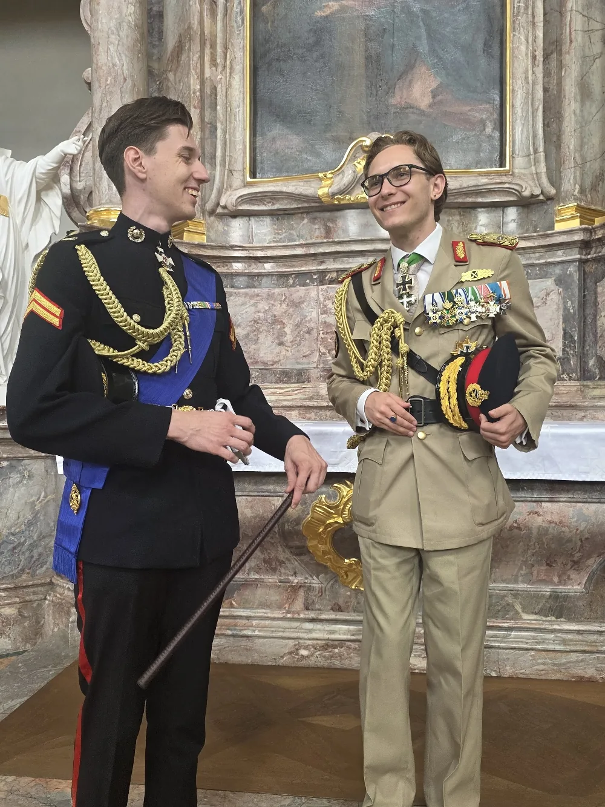
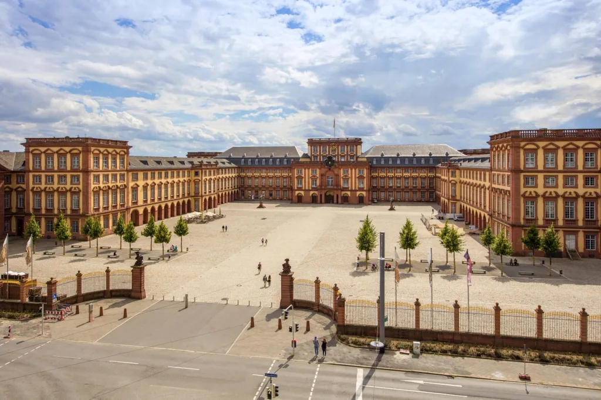
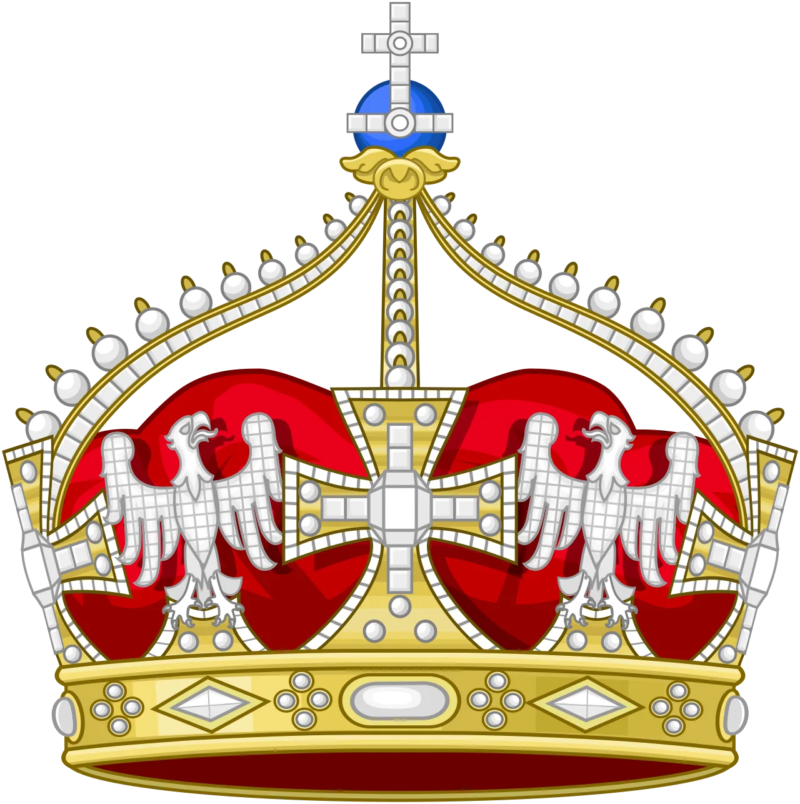

Imperium Germanicum – Das interaktive Rollenspiel
ÜberDas Imperium Germanicum
Ein fiktiver Staatenbund in Europa – das interaktive Rollenspiel

StaatsoberhauptDer Souverän

EinblickeDie Bildergalerie
Neue Erlasse und GesetzeAnsehen
Die Imperiale ChartaLesen
Der Souverän ist der höchste Repräsentant des Reiches und genießt als solcher die höchste Würde.

HoheitsgebietDie Reichskarte
Für Monarchie-, Adels-, Militär- und Geschichtsliebhaber
Das interaktive Rollenspiel
Das Imperium Germanicum ist ein fiktiver Staatenbund in Europa, basierend auf den Grenzen des früheren Heiligen Römischen Reiches, es stellt eine alternative Gegenwart dar, in der das Heilige Römische Reich die Jahre überdauert hat und sich bis in die heutige Zeit weiterentwickelt hat.
Das Imperium Germanicum besteht wie schon sein historisches Vorbild aus unzähligen kleineren Staaten, darunter verschiedene Fürstentümer, Königreiche, Herzogtümer und andere Gebietskörperschaften.
Sehr weit oben in der Hierarchie befinden sich die 9 Kurfürsten welche die 9 Landesoberhäupter der wichtigsten Teilstaaten des Reiches sind, sie bilden den sogenannten kaiserlichen Senat.
Eine der wichtigsten Aufgaben des Senats ist die Wahl des Souveräns und Staatsoberhaupts des Imperium Germanicum, des Kaisers.
Der Kaiser wird für 1 Jahr aus einem der 9 Kurfürsten gewählt und eine Wiederwahl ist unbegrenzt möglich.
Zum Staatsaufbau
Institutionen & Verfassung
Alle Institutionen
Ein kleiner Überblick
Ein kleiner Vorgeschmack auf einige unserer zahlreichen Institutionen und die Verfassung des Reiches

Der Etiketten-Guide
Eine Anleitung zur Einhaltung der Etikette und Höflichkeit innerhalb des Reiches
Guide lesen

Interaktiv
Wer wählt, wer ernennt, wer kontrolliert
Das Organigramm zeigt alle Organe des Reiches mit ihren gegenwärtigen Amtsträgern und wer wen wählt, ernennt, kontrolliert oder überstimmen kann.
Zum interaktiven Organigramm – Organigramm öffnen
– Organigramm öffnen – Karte vergrößern
– Karte vergrößern
Mittel- und Südeuropa
Hoheitsgebiet des Imperium Germanicum
Das Imperium Germanicum befindet sich in Mittel- und Südeuropa und umfasst ein Hoheitsgebiet von 1.205.000 km².
Das Königreich Apulien ist aufgrund der Personalunion des Kaiserthrons mit dem Königsthron de facto ein Teil des Imperiums, sowie der Heilige Stuhl in dessen Gebiet seine Heiligkeit der Papst eine besondere Stellung innehat, jedoch seine Majestät der Kaiser die militärische und zivile Verwaltung kontrolliert.
Das Imperium Germanicum ist zudem als teilzentralisierter Bundesstaat organisiert.
Das Imperium besteht aus vielen Teilstaaten unterschiedlicher Größe, welche ihre inneren Angelegenheiten zumeist selbst bestimmen.
Hier gilt die von der Charta vorgeschriebene Regel, dass das Reichsrecht das Landesrecht bricht, wenn es Differenzen zwischen Gesetzen gibt.
Das gesamte Imperium Germanicum umfasst daher 217.000.000 Staatsbürger.
9 der Teilstaaten des Imperiums sind sogenannte Kurfürstentümer deren jeweiliges Landesoberhaupt als Kurfürst einen Sitz im Senat, dem exekutiven Organ des Imperiums innehat.
Alle anderen Landesoberhäupter haben mit ihrer jeweiligen Delegation einen Sitz im Reichstag, dem legislativen Organ des Imperiums.
Zur Reichskarte
Insignien
Die Kronen des Reiches



Interesse geweckt? Werde ein Teil des Imperium Germanicum.
Melde dich zum Dienst